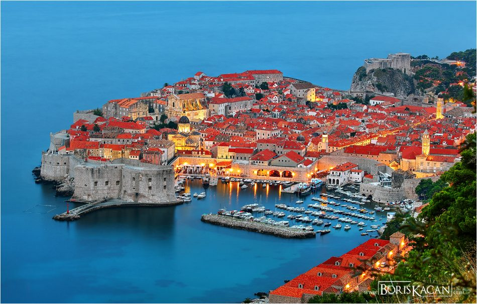

Zlatni rat, plaža na Braču, je jedna od najljepših plaža na svijetu. Ovu 530 metara dugačku plažu, smještena na otoku Braču, nazivaju rajem na zemlji. Njen bijeli pijesak, i tirkizno čisto plavo ime, podsjeća na egzotične plaže nekog Karipskog otoka.s Brač je isto tako sjajno mjesto za provesti odmor sa svojom obitelji, jer nudi različiti bronj aktivnosti za sve dobi, a posebno će biti zanimljiv djeci jer im je na raspolaganju niz vodenih sportova kao što su jetskies, vožnja bananama, trampolini i jedrenje. Dva najpoznatija mjesta na Braču su Supetar i Bol, na kojem se nekada igrao čuveni teniski turnir.
U 19. stoljeću je George Bernard Shaw izjavio: „Tko traži raj na zemlji, trebao bi posjetiti Dubrovnik.“. U modernim vremenima poznat je po lokacijama na kojima su se snimali veliki broj popularnih filmova i serija kao što su Igra prijestolja, Ratovi zvijezda, Robin Hood... Dubrovnik je jedan od najpopularnijih destinacija na čitavom Jadranu, koje privlači stotine tisuća turista svake godine. U centru grada dominira Stradun, najpoznatija i najljepša dubrovačka ulica. Dugačka je 300 metara i popločana je mramorom, Stradun povezuje istočna i zapadna gradska vrata, a sa obje strane mogu se vidjeti značajni povijesni objekti, muzeji, trgovi, itd. Također posjetitelji u Dubrovniku se mogu prošetati po gradskim zidinama, jednim od najboljim očuvanim povijesnim spomenicima Europe, koji se također nalaze na UNESCO-voj kulturnoj baštini.
Ukoliko Vas zanima što posjetiti u Hrvatskoj ili ukoliko tražite neku lokaciju za Vaš idealan odmor u nastavku teksta vam donosimo neke od najzanimljivij lokacije koje valja posjetiti u Hrvatskoj. Nacionalni park „Plitvička jezera“ je jedan od najpoznatijih, ako ne i najpoznatiji hrvatski nacionalni park. Sa svoji 16 smaragdno-zelenim jezerima, Plitvička jezera nisu samo jedan od bisera Hrvatske, već čitave regije. Ovo je prvi nacionalni park u Hrvatskoj, otvoren još 8. travnja 1949. godine. Danas su dio UNESCO-ve kulturne baštine, naseljene raznim životinjama, te više od 160 vrsta ptica. Najbolje vrijeme za posjetu parka je u proljeće, kada sve procvjeta, a privlačno je i u zimi, kada se jezera i slapovi zalede, te kada snježni pokrivač prekrije jezera.